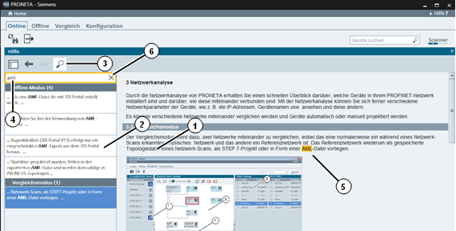

2
Grundlagen zu PRONETA Basic
2.2
Hilfeansicht
Die PRONETA Basic Online-Hilfe kann jederzeit durch die Auswahl „Hilfe“ aus dem „Hilfe?“ Aufklappmenü am rechten Ende der Kopfleiste oder durch Drücken von "F1" umgeschaltet werden. Eine Hilfeansicht wird auf der rechten Seite des PRONETA Basic-Fensters geöffnet, dort können Sie durch die Hilfethemen scrollen, den Links folgen oder Einträge aus dem Inhaltsverzeichnis aussuchen. Die Größe der Ansicht kann durch Ziehen der Fensterränder nach links oder rechts verändert werden.
Die Hilfe stellt dieselben Informationen wie dieses Handbuch zur Verfügung.
Funktionsleiste
Die Hilfeansicht besteht aus einer Funktionsleiste mit vier Funktionen:
|
Symbol
|
Name
|
Funktion
|
|

|
Inhaltsverzeichnis anzeigen
|
Blendet das Hilfe-Inhaltsverzeichnis ein oder aus.
|
|

|
Vorheriges Thema anzeigen
|
Wechselt zum vorherigen Thema im Browserverlauf
|
|
|
Nächstes Thema anzeigen
|
Wechselt zum nächsten Thema im Browserverlauf.
|
|
|
In der Hilfe suchen
|
Schaltet eine Suchansicht in der Hilfeansicht ein oder aus.
|
Inhalte der Hilfeansicht
Die Hilfeansicht besteht aus bis zu zwei Elementen, die nebeneinander angeordnet sind. Neben dem eigentlichen Hilfethema (1) steht auf der linken Seite ein zweites Fenster zur Verfügung (2), das entweder das Inhaltsverzeichnis oder die Suchansicht anzeigt.

Suchen
Durch Klicken auf das „In der Hilfe suchen“ Symbol (3) in der Kopfleiste wird die Suchansicht ein- und ausgeschaltet.
Mit der Eingabe des Suchbegriffs im Suchfeld (4), führt PRONETA Basic eine Volltextsuche der gesamten Hilfethemen durch, und eine Ergebnisliste wird unter dem Suchfeld angezeigt. Klicken Sie auf einen der Ergebniseinträge, um zum entsprechenden Thema zu springen, dort wird der gefundene Suchbegriff hervorgehoben. (5)
Die Suche arbeitet ohne Unterscheidung nach Groß-/Kleinschreibung und gestattet keine Platzhalter oder reguläre Ausdrücke. Eine Suche nach „opolo“ wird „Topologie“ und „TOPOLOGIEN“ finden
Wenn Sie auf das „ד Symbol am rechten Ende des Suchfeldes klicken (6) werden der Suchbegriff und alle Suchergebnisse gelöscht.
Inhaltsverzeichnis
Wenn auf ein beliebiges Thema im Inhaltsverzeichnis geklickt wird, wird zum entsprechenden Hilfethema gesprungen.
Hilfethemen
Ansicht des aktuellen gewählten Hilfethemas. Verwenden Sie den Scrollbalken auf der rechten Seite, um im Hilfethema auf- und abzunavigieren.
Um die Hilfeansicht zu schließen, benutzen Sie eine dieser Möglichkeiten:
Klicken Sie auf das „x“-Symbol in der rechten oberen Ecke der Titelleiste der Ansicht.
Drücken Sie F1.
Wählen Sie „Hilfe“ aus dem „Hilfe?“-Menü in der rechten oberen Ecke des PRONETA Basic-Fensters.